01
Spatial Planning
Training zones, clearances, circulation, sightlines, storage, and the relationship between fitness and recovery spaces.
Performance Edge is a Long Island home gym designer creating private training and recovery environments around the way you live, move, and train—then coordinating the details from early planning through final installation.
Discuss Your ResidenceYour wellness space should feel as intentional as every other room in the home.
Most home gyms begin with equipment. We begin with behavior: how you train, when you train, what creates friction, and what would make movement a natural part of the day.
The result is not an equipment showroom. It is a considered environment that performs beautifully, belongs in the architecture, and still feels relevant years from now.
Training zones, clearances, circulation, sightlines, storage, and the relationship between fitness and recovery spaces.
A purpose-built equipment plan based on your training, available space, aesthetic, and long-term use—not a generic package.
Flooring, mirrors, lighting, acoustics, color, and finish recommendations that connect performance requirements to the home.
Direct collaboration with your architect, interior designer, builder, AV team, and other project partners.
Equipment sourcing, vendor coordination, lead-time planning, delivery sequencing, and specification oversight.
Coordination through installation, final placement, styling, walkthrough, and a space ready to use from day one.
Homeowners planning a new residence, renovation, or dedicated wellness wing.
Clients who want the gym to complement the architecture rather than compete with it.
Families who need one space to support different training styles, ages, and routines.
Architects and interior designers seeking a performance specialist for the wellness program.
Existing gym owners ready to correct layout, equipment, storage, recovery, or finish decisions that never worked together.
Completed rooms, evolving gym layouts, and active design studies across Long Island homes. Each project responds to the space, the household, and the way its owners train.

A basement reorganized into distinct training, recovery, and living zones.

Equipment is planned to integrate with the barn’s architecture and keep the gym light and airy.
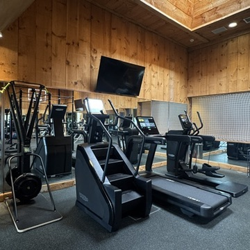
An ongoing relationship with multiple layouts and equipment updates over the years.
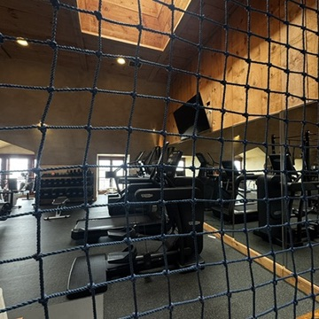
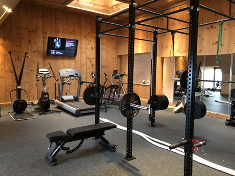
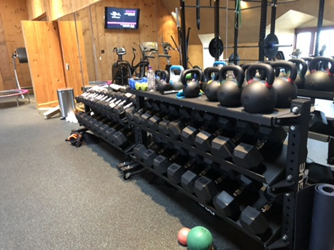
Selected views from different stages; images are not presented as a dated sequence.
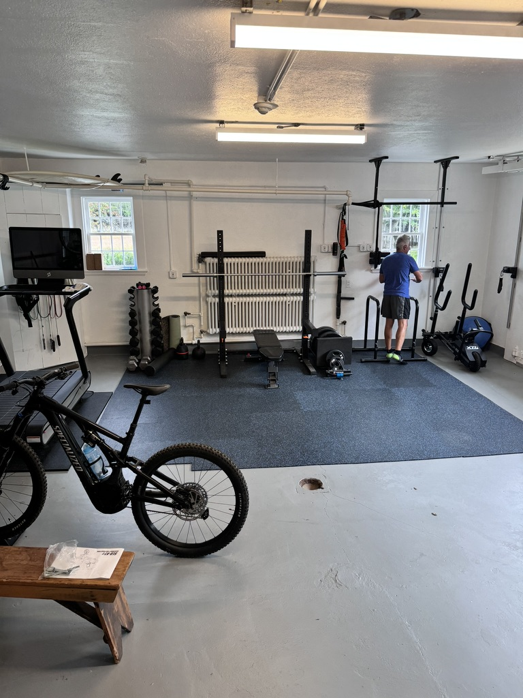
A practical training setup shaped around a historic summer cottage at Caumsett State Park.
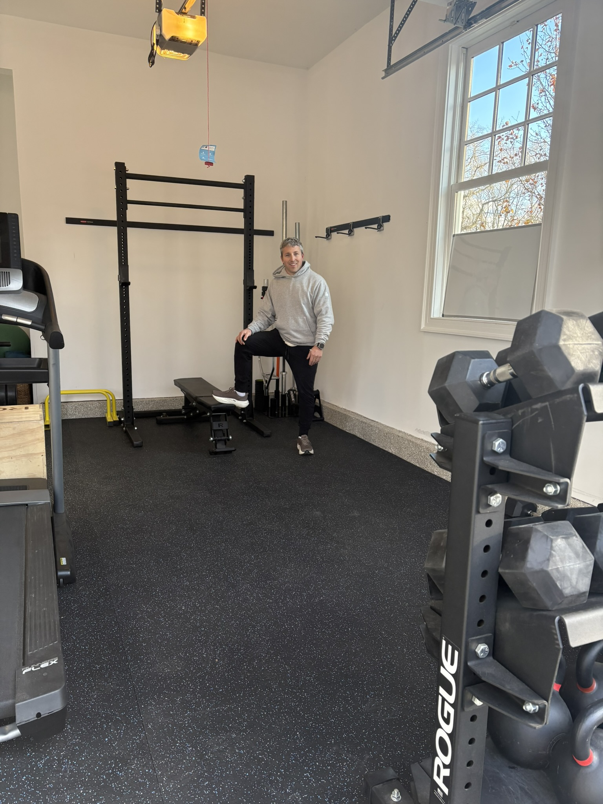
A functional garage gym with strength equipment, free-weight storage, cardio, and open training floor.
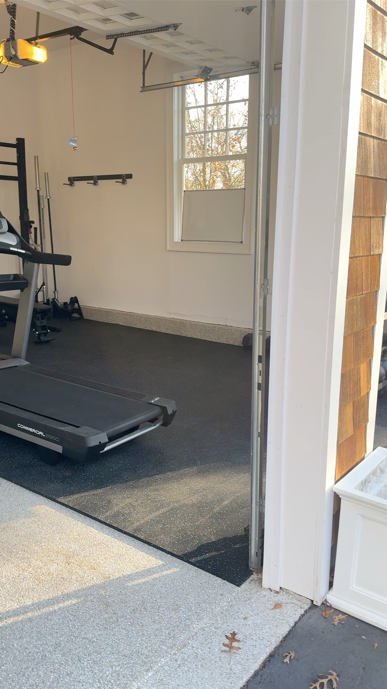
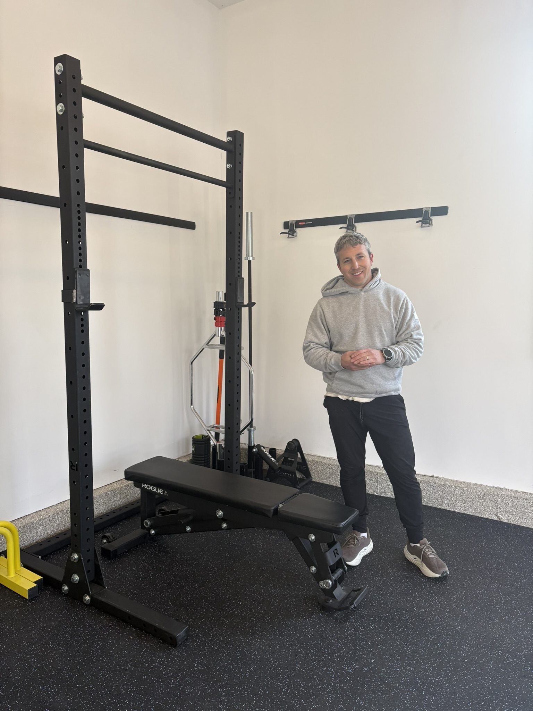
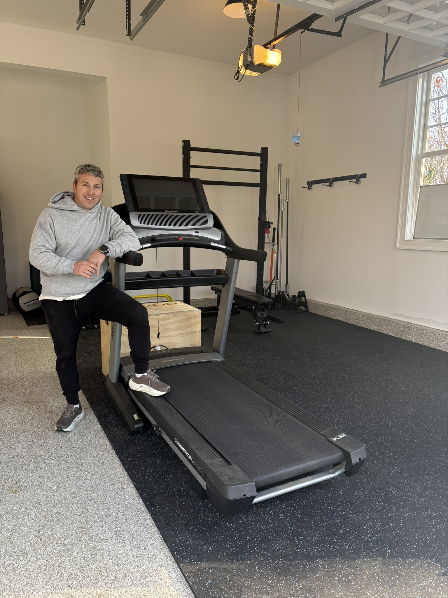
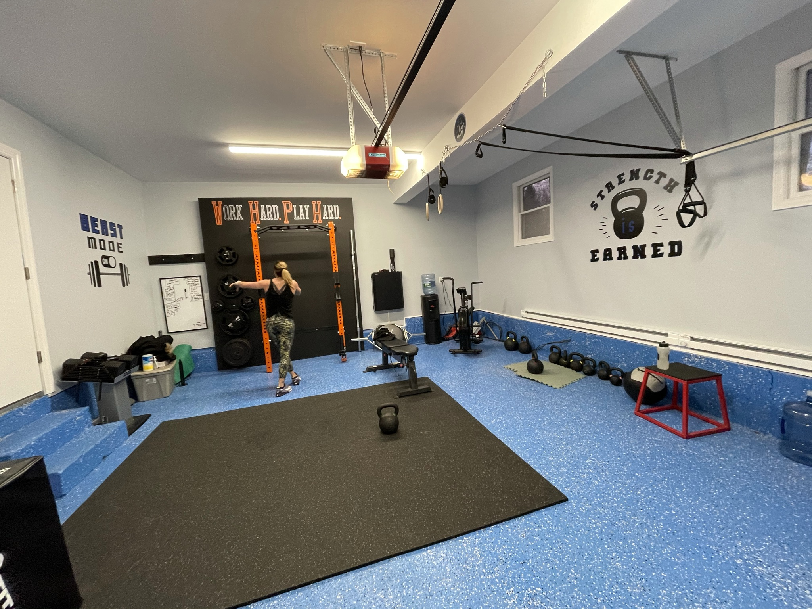
A personal training space with a strong visual identity, rack-based lifting, conditioning, and functional-training zones.
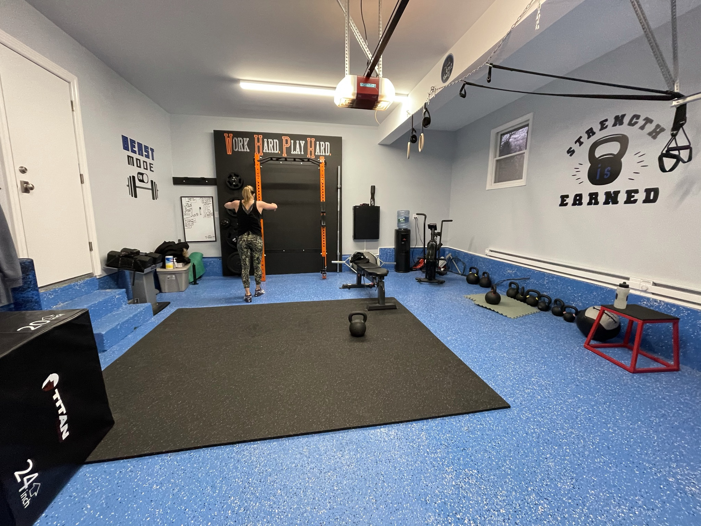
Performance Edge has also completed garage and room gym projects in Lloyd Neck and Laurel Hollow, NY.
We define how you train, how the household will use the space, and what success should feel like.
We evaluate dimensions, structure, light, acoustics, access, circulation, and existing project conditions.
Layouts, equipment plans, mood direction, and renderings align the room before anything is ordered.
Equipment, flooring, mirrors, lighting, storage, finishes, and performance details are resolved together.
We work with your project team and vendors to manage decisions, lead times, delivery, and installation.
The completed environment is reviewed, styled, explained, and handed over ready for training.
Every project is quoted individually. The final investment depends on the room, equipment, materials, recovery features, access, and the amount of coordination required.
This directional range covers equipment, finishes, design coordination, and installation according to the agreed scope. Structural construction and general contracting are priced separately by the appropriate project partners.
Use the Project EstimatorAs early as possible. Joining during architectural or interior-design planning allows equipment clearances, structure, power, lighting, acoustics, flooring, storage, and delivery access to be resolved before they become expensive changes.
Performance Edge leads the gym design, equipment specification, procurement coordination, and installation oversight. We collaborate with your architect, interior designer, builder, and specialist installers; physical construction is completed by the appropriately licensed project partners.
Yes. Collaboration is central to the service. The goal is to give the wider project team a performance specialist who can make the wellness space work technically while preserving the design language of the home.
Yes. Performance Edge is based on Long Island and accepts select residential projects nationwide, with current and completed work in New York, Florida, and California.
Performance Edge works with residential clients across Nassau and Suffolk counties. Long Island project experience includes Jericho, Glen Cove, Sands Point, Lloyd Harbor, Oyster Bay Cove, Dix Hills, Lloyd Neck, and Laurel Hollow.
Many projects complete in approximately 8–20 weeks, depending on design scope, construction readiness, customization, equipment availability, and vendor lead times.
Tell us about the residence, the project stage, and how you want the space to support your life. We respond within one business day.
Start a Residential Conversation